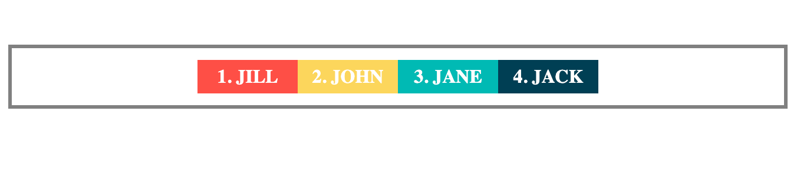
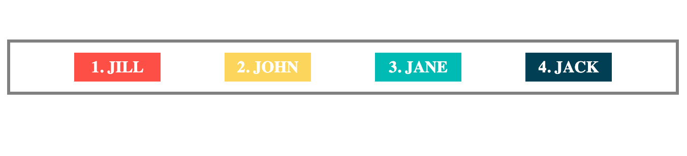
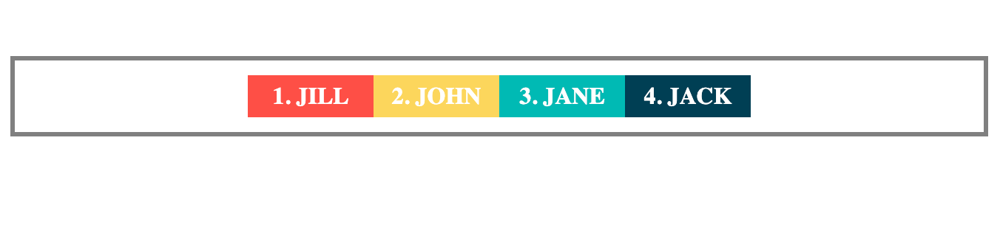
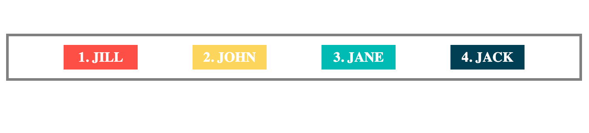
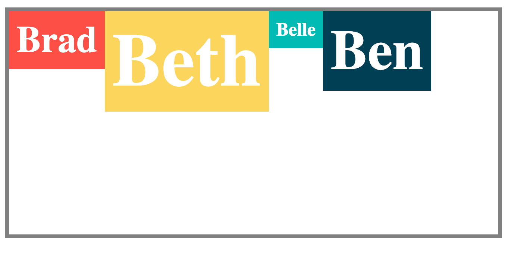
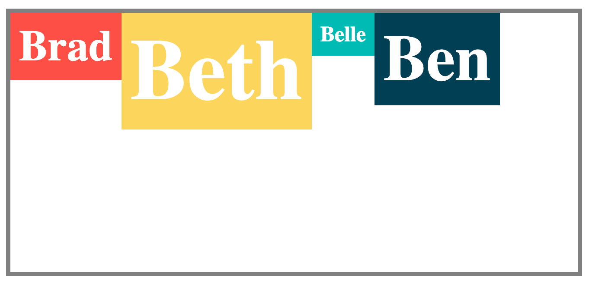
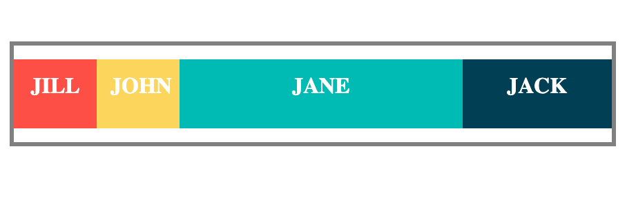
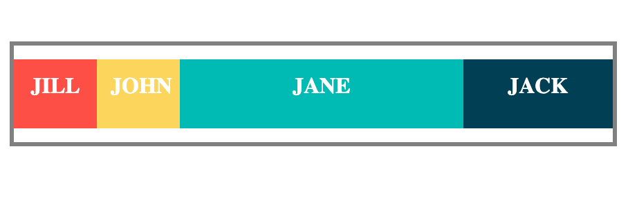

Why Flexbox & Grid is cool
Floats and the first layout frameworks
New is always better… Right?So Grid wins!
Use Flex when:
- Content is priority
- Need horizontal or vertical alignment
- Layout is one-dimensional
- Need better older browser support
Use Grid when:
- Things need a set width regardless of content
- Need two-dimensional layout (items in one row or column need to align with the item in the previous row or column)
- Elements need to overlap
flex-direction: row  flex-direction: column
flex-direction: column  display: flex
display: flex display: inline-flex
display: inline-flex The Flex Container Properties
The Flex Container Properties
flex-directionflex-wrapflex-flowjustify-contentalign-itemsalign-contentplace-content
flex-direction
row (default value)columnrow-reversecolumn-reverse
flex-direction: row-reverse
flex-direction: column-reverse
flex-wrap
nowrap (default value)wrapwrap-reverse
flex-wrap: nowrap flex-flow
flex-flow
flex-flow = flex-direction + flex-wrap
 justify-content
justify-content
flex-start (default value)flex-endcenterspace-betweenspace-aroundspace-evenly
justify-content: flex-start justify-content: flex-end
justify-content: center
justify-content: space-between
justify-content: space-evenly
justify-content: space-around
align-items
justify-content: flex-end
justify-content: center
justify-content: space-between
justify-content: space-evenly
justify-content: space-around
align-items
stretch (default value)flex-startflex-endcenterbaseline
align-items: stretch align-items: flex-start
align-content
align-items: flex-start
align-content
stretch (default value)flex-startflex-endcenterspace-betweenspace-evenlyspace-around
align-content: stretch align-content: flex-start
align-content: space-between
align-content: space-evenly
align-content: space-around
place-content
align-content: flex-start
align-content: space-between
align-content: space-evenly
align-content: space-around
place-content
place-content = justify-content + align-content
 Adding gaps between only the rows
Adding gaps between only the rows
row-gap: 20px
Adding gaps between only the columns
column-gap: 20px
The Flex Item Properties
orderalign-selfflex-growflex-shrinkflex-basisflex
order

 align-self
align-self
 When only one card has a flex-grow of 1 or more
When only one card has a flex-grow of 1 or more
 What happens when you add flex-grow values to more than one element?

flex-shrink
What happens when you add flex-grow values to more than one element?

flex-shrink
 The first card shrinks to make room for the others
What if you don't want a flex item to shrink?
The first card shrinks to make room for the others
What if you don't want a flex item to shrink?
flex-shrink: 0
 flex-basis
flex-basis
 flex-basis
flex-basis
 flex-basis & flex-direction: row
flex-basis & flex-direction: row
 The
The flex shorthand property
flex = flex-grow + flex-shrink + flex-basis
 thank me later
thank me later